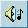
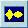
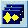

Изучаем DelphiX (Часть 7)
Изучаем DelphiX. Часть 7: Звуки и музыка.
Автор: Влад Энгельгардт "Звуки и музыка создаютатмосферу в игре"
Здравствуйте дорогие мои читатели, сегодня мы займёмся воспроизведением звуков и музыки в игре. Займёмся в начале звуками. В этом уроке рассмотрим два способа воспроизведения звука. За основу я решил взять седьмую часть. Теперь рассмотрим компоненты, с помощью которых мы будем осуществлять воспроизведение музыки.
DXSound - в общем через него звук и будет воспроизводится.
DXWave - необходим для хранения, и воспроизведения одного звука.
DXWaveList -В нём можно хранить, и воспроизводить звуки через DXSound.
Внимание, напомню, что звуки можно загружать в игру только в формате Wav или Dxw.
Ну, так что, приступим. Для начала кидаем компонент DxSound на форму. Затем кидаем DXWaveList и в закладке Properties напротив DXSound выбираем наш саунд :). Теперь давайте загрузим наш первый звук. Это будет естественно выстрел. Он будет у нас вот таким: fa.wav. Теперь щёлкаем по нашему компоненту DxWaveList, и находим Items с удовольствием нажимаем, и далее всё также, как мы работали с ImageList. Добавим звук и назовем его Fa. Теперь по идеи стреляют у нас оба класса и игрок и плеер, так что добавляем это в процедуры DoMove. При событии создания патрона. Так должно выглядеть для каждого класса.
Для Playerone:
if isbutton1 in Form1.DXInput1.States then
begin
if lngpolet-oldlngpolet>=250 then
begin
Inc(lngpolet);
with TPlayerFa.Create(Engine) do
begin
form1.DXWaveList1.Items.Find('fa').Play(true);
Image := form1.DXImageList1.Items.Find('pul');
X:=self.X+cos256(ang)*55;
Y:=self.y+sin256(ang)*55;
anglefa:=ang;
oldlngpolet := lngpolet;
end;
end;
end;
Для Playertwo:
if fa=true then
begin
if lngpolet-oldlngpolet>=250 then
begin
Inc(lngpolet);
with TPlayerFa.Create(Engine) do
begin
form1.DXWaveList1.Items.Find('fa').Play(true);
Image := form1.DXImageList1.Items.Find('pul');
X:=self.X+cos256(ang2)*55;
Y:=self.y+sin256(ang2)*55;
anglefa:=ang2;
oldlngpolet := lngpolet;
end;
fa:=false;
end;
end;
Следующий пример со стереоэффектом. Этот пример будет способен различать в какой стороне находится патрон и "снижать громкость" в противоположном динамике.
Let's GO!! :)
Перед implementation в Var добавляем две переменные:
pulxpl,CurrentPanpl:integer;
Первая - это X патрона, вторая это высота звука и место расположения.
Теперь в процедуру TPlayerFa.DoMove добавляем некоторые строчки, и она становится вот такой:
procedure TPlayerFa.DoMove(MoveCount: Integer);
begin
inherited DoMove(MoveCount);
angle := anglefa;
x:=x+cos256(angle)*8;
y:=y+sin256(angle)*8;
pulxpl := trunc(x); //передаём переменной значение Х патрона
CurrentPanpl := -20000 * pulxpl div form1.DXDraw1.ClientWidth + 10000; // И так всё //понятно
form1.dxwavelist1.Items.Find('fa').pan := CurrentPanpl; //Присваиваем значение звуку
if X>= 800 then Dead;
if y>= 600 then Dead;
if X<= 0 then Dead;
if y<= 0 then Dead;
Collision;
end;
Конечно, это самый примитивный способ, и требует доработки, но всё же годен для использования, например, в аркадах. Что касается музыки, то для мелких проектов использовать Midi или Mod, а в более серьёзных, где качество звука должно быть на высоте, надо использовать более качественные форматы, или библиотеки. А так, для воспроизведения музыки в игре можно пользоваться и MediaPlayer (стандартным компонентом для воспроизведения музыки). Я добавил музыку в последний пример с помощью MediaPlayer. Совет для всех: чтобы музыка корректно воспроизводилась у всех, переписываете её в папку с игрой, и в MediaPlayer указывайте не полный путь, а только название файла. И ещё совет, MediaPlayer1.Play; вставляёте в самом конце DXDraw Initialize иначе может случиться, что игра ещё не загрузилась, а музыка будет играть.
Вот и всё. Скачать можно первый пример, второй пример.
И ещё, пишите о том, что хотите прочитать, это мне очень важно по вашим письмам я строю план следующей части. Нет писем нет частей :(.